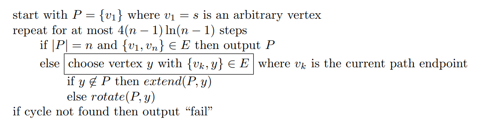
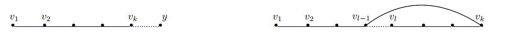

Lecture 10 - 2024 / 3 / 20
Randomized Routing
考虑 n 维超立方体，网格的顶点为 {0,1}n，共 N=2n 个，每条边双向，令 π 是任意排列，目标是从每个 i 发送一个数据包到对应的 π(i)，但是同一个条边每个时间只能有 1 个数据包通过。
现在要设计一种路径规划算法，最小化最大传输时间。这里要求 i 的路径只取决于 i 和 π(i) 我们称之为 oblivious，这是具备现实意义的。
Theorem: 对于任何确定性 oblivious 的路径规划算法，存在一种排列需要 Ω(N/n)=Ω(2n/n)。
Theorem: 存在一种 oblivious 随机路径规划算法，w.h.p 在 O(n) 步停止。
该算法的思路是“随机中转”，即对于每一个 i，等概率采样一个 δ(i)，算法分为两个阶段
- 从 i→δ(i)
- 从 δ(i)→π(i)
在两个阶段中，都采用 bit-fixing 方式，例如 x→y，就是从左到右逐位比较，如果 xi=yi，那么当前就从对应边前进。
不失一般性，我们只分析第 1 阶段的长度。
用 D(i) 表示 i 在路径中等待的时间长短，那么总时长一定不超过 n+maxiD(i)，我们接下来将证明
∀i,Pr[D(i)>cn]≤e−2n
根据 union bound，Pr[∃i,D(i)>cn]≤2ne−2n<2−n
用 Pi 表示 i→δ(i) 的路径上所经过的点，用 Si={j=i∣Pj∩Pi=∅}，也即路径相交的个数。直观上我们得到以下结论：
Claim: D(i)≤∣S(i)∣
证明的思路是“锅不能停”。

在等价意义下，至多只会被每个人阻碍一次，因此 D(i)≤∣S(i)∣。
Lemma: ∀i,Pr[D(i)>cn]≤e−2n
定义 Hij={10Pi∩Pj=∅Pi∩Pj=∅，从而 D(i)≤j=i∑Hij=∣S(i)∣。
对于图中每一条边，期望经过它的路径条数为 NnNn/2=21，从而 E[∣S(i)∣]≤2n，即路径长度乘每条边的期望路径个数。根据 Chernoff bound，有
Pr[D(i)≥(1+β)μ]≤exp(−2+ββ2μ)
容易看出，当我们想分析一个固定的 tail 时，μ=2n 一定是最坏的，取 β=6，有 Pr[D(i)≥27n]≤exp(−49n)≤exp(−2n)。
Hamilton Cycles (1)
对于 G=(V,E)∈G(n,p)，其中 p≥n−172lnn，则存在一个多项式时间的随机算法 w.h.p. 找到一个 Hamiltonian 圈。
算法的思想是利用 coupon collector，算法陈述如下

这里有 extent 和 rotate 两个函数，分别表示枚举到新端点 v 时，若其之前还没出现 / 已经出现，现在应该如何操作

于是重点在于 choose 这一步，我们需要保证的是从“观察者视角”，所有的 V 中的点具有均等概率被选作下一个点。从而我们可以利用 coupon collector 的结论，期望在前 2nlnn 步收集到所有点形成 Hamiltonian 路，后 2nlnn 步枚举到与 v1 相邻的点，找到 Hamiltonian 圈。
严谨的来说，我们要保证
GPr[v∈V is next endpoint∣Path history] are the same
为了达到这一点，我们需要将边退化为有向边，以确保双向选择的独立性，对于 (u,v)∈E 时，定义 N(x) 为 G′ 中 x 的邻居结点
{y∈N(x)∧x∈N(y)}{y∈/N(x)∧x∈N(y)}{y∈N(x)∧x∈/N(y)}{y∈/N(x)∧x∈/N(y)} w.p. 4p w.p. 21−4p w.p. 21−4p w.p. 4p
我们将在实现 choose 时从 N(x) 中挑选邻居。定义 OLD(x)={y∣choose picked y when x was endpoint}，选点策略如下：
算法的正确性将在下一讲证明。